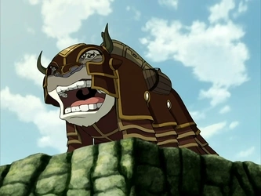

Appa was young when he met Aang. They became friends after Aang offered him an apple. They lived in peace with the other members of East Air Temple. They would spend their days playing and learning with their peers. Just before the Air Nomad Genocide, Aang escaped the temple using Appa as his form of transportation. During their escape, they encountered a dangerous storm that swept them under the water and caused them to lose their consciousness. Aang was able to save both him and Appa through the use of his Avatar state, but they remained unconscious for 100 years until they were discovered by Katara and Sokka.
While traveling through the Earth Kingdom, Appa got separated from the group when sandbenders kidnapped him in the middle of the Si Wong Desert. Aang, Katara, Sokka, and Momo were stuck in an underground Spirit library at the time and couldn’t help him. Appa was eventually sold to a Fire Nation circus. Appa managed to escape and returned to the desert where he last saw Aang. Appa continued his journey through the Earth Kingdom. He eventually came across the Kyoshi Warriors, who helped heal the wounds he had suffered during his time on the run. They wanted to take him back to Aang, but their plan was interrupted when Azula and her team attacked. Suki urged Appa to flee while she and the others stayed behind to fight. During his travels, Appa met Guru Pathik at the Eastern Air Temple. The Guru sensed Aang’s location by reading Appa’s energy, so Appa flew to Ba Sing Se. Unfortunately, he was captured by Long Feng and hidden beneath Lake Laogai. Zuko initially planned to use Appa to capture Aang, but after talking to his uncle Iroh, he changed his mind and freed the bison instead. Appa found his friends cornered by Long Feng and the Dai Li. He played a key role in helping them escape, even biting Long Feng in the leg. Aang was reunited with Appa. Later, Appa helped them break into the Royal Palace of Ba Sing Se.
Appa stayed by Team Avatar’s side as they journeyed on, even joining Hakoda's crew for a bit. After getting a new saddle, he helped the group find Aang when he disappeared during a storm, and they all reunited on Crescent Island. While traveling through the Fire Nation, Appa had to stay hidden most of the time, with Aang and Katara disguising him as a cloud when he flew. He also wore armor during the failed invasion of the Fire Nation. Afterward, Appa took the younger members of the team to the Western Air Temple for safety. Despite everyone being unsure about Zuko at first, Appa welcomed him because he remembered how Zuko had freed him from Ba Sing Se. In the final days of the war, Appa helped the team look for Aang and later flew Zuko and Katara to face Azula.
After the Hundred Year War ended, Appa was with the gang in Ba Sing Se as they celebrated at the Jasmine Dragon. A year later, Appa helped transport Fire Nation colonials and when the Harmony Restoration Movement failed, Appa flew the Gaang on a mission to Hira'a to search for Zuko's mother, Ursa. Though unhappy about Azula joining them, Appa still helped in a battle against a wolf spirit during the journey. Later, he flew the team and the Mother of Faces back to Hira'a. Appa was believed to be the last of his kind after the Air Nomad Genocide, but Aang eventually found a new herd of sky bison, and colonies of bison thrived at the air temples. Appa continued as Aang's animal guide.